الباب 02: إشارات الخطر وقواعد الأمان على الطريق
المرجع الهندسي والمعرفي المعتمد الشامل لكافة إشارات الخطر المثلثية ذات الإطار الأحمر: القاعدة الذهبية لمسافة 150 متراً، المقارنة البصرية الحاسمة بين المرتفع (Dosso) والمنخفض (Cunetta) والممنوعات الخمسة، شجرة معابر السكة الحديد (Passaggi a livello) ولوحات المسافات الثلاث، مخاطر المنحدرات الحادة واستخدام فرامل المحرك، مع تفكيك كافة الفخاخ الوزارية المعتمدة.
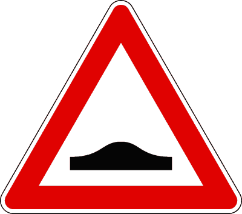
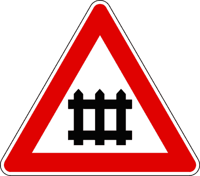
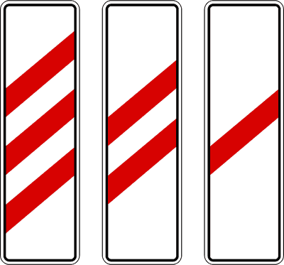
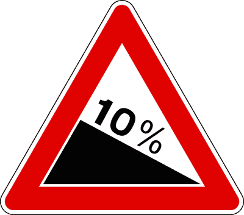
المقارنة البصرية الحاسمة: المنعطفات الخطيرة وقوة الطرد المركزي
الفروق الأساسية بين المنعطف المفرد لليمين أو اليسار والمنعطف المزدوج وقواعد الأمان
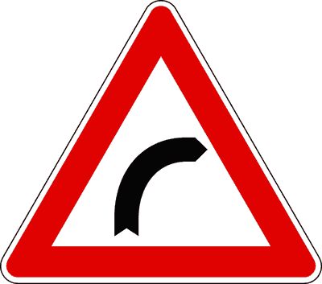
منعطف خطر لليمين
انحناء حاد لليمين؛ الرؤية محدودة. قوة الطرد المركزي تدفع السيارة نحو اليسار (الخارج). يمنع التجاوز في الطرق ذات المسار الواحد للاتجاهين.
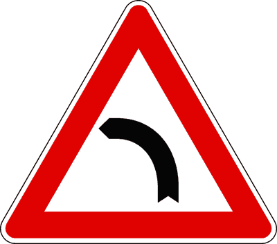
منعطف خطر لليسار
انحناء حاد لليسار؛ الرؤية محدودة. قوة الطرد المركزي تدفع السيارة نحو اليمين. يمنع الدوران للخلف والرجوع للخلف والوقوف والتوقف.
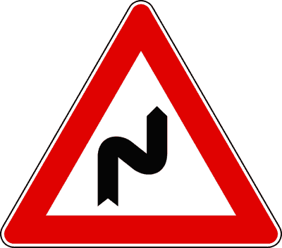
منعطف مزدوج، أوله لليمين
سلسلة منعطفات خطيرة أولها يتجه لليمين. قد يلحق به لوحة تكميلية توضح طول مقطع الخطر الممتد (Estesa per... km).
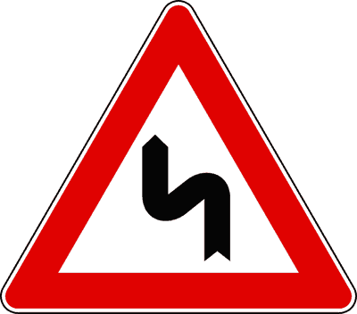
منعطف مزدوج، أوله لليسار
سلسلة منعطفات خطيرة أولها يتجه لليسار. يلزم بتخفيض السرعة والالتزام بالمسار الأيمن بحذر شديد خاصة عند هطول الأمطار.
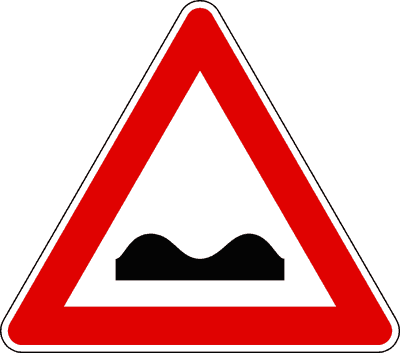
طريق مشوه أو سيئ الأرضية (Strada deformata)
Strada deformata o dissestata (Figura 1)مثلث بإطار أحمر يشير إلى جزء من الطريق ذي أرضية غير مستوية أو متدهورة وبها حفر ومطبات عشوائية. يلزم بتخفيض السرعة والإمساك بالمقود بإحكام لتفادي انحراف المركبة أو تلف نظام التعليق.
- • يشير إلى مقطع طريق بحالة سيئة أو أرضية متدهورة وغير منتظمة (Fondo irregolare).
- • يلزم السائق بتخفيض السرعة لتجنب الأضرار بنظام تعليق المركبة (Sospensioni).
- • يلزم بإحكام القبض على المقود لتفادي انحراف المركبة وفقدان السيطرة (Sbandamento).
- • إذا كانت الخلفية صفراء، فإنه يشير إلى وجود ورش وأشغال طرق (Cantiere stradale).
- • يمنع التجاوز دائماً (خطأ، التجاوز مسموح بحذر مع مراعاة الخطوط الأرضية).
- • يشير إلى صعود يليه هبوط (خطأ، هذا تعريف Dosso Fig. 2).
- • يشير إلى وجود أعمال صيانة دائماً (خطأ، فقط إذا كانت الخلفية صفراء).
مرتفع حاد مع انعدام رؤية (Dosso)
Dosso (Figura 2)مثلث بإطار أحمر يصور تشوهاً في استواء الطريق عبارة عن صعود يليه هبوط. مكمن الخطر الأساسي هو انعدام الرؤية في مرحلة الصعود مما يفرض حظر مناورات خطيرة.
- • يشير إلى تشوه في استواء الطريق يتكون من صعود يليه هبوط (Salita seguita da discesa).
- • يقلل من مدى الرؤية للسائق (Limita la visibilità).
- • يمنع في الطرق ذات الاتجاهين بمسار واحد: الوقوف والتوقف، الدوران للخلف، الرجوع للخلف، والتجاوز في مرحلة الصعود.
- • يسمح بالتجاوز في مرحلة الصعود فقط إذا كان الطريق باتجاه واحد (Senso unico) أو بمسارين على الأقل لنفس اتجاه السير.
- • يشير إلى هبوط يليه صعود (خطأ، هذا تعريف Cunetta Fig. 3).
- • يحظر التجاوز حتى في الطرق ذات الاتجاه الواحد (خطأ، في Senso Unico التجاوز مسموح).
- • ينبه إلى خطر تجمع مياه الأمطار (خطأ، هذا الخطر خاص بالـ Cunetta).
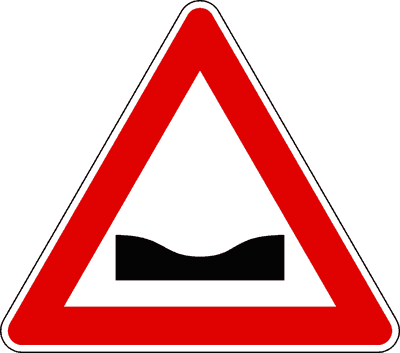
منخفض طريق ومجرى سيل (Cunetta)
Cunetta (Figura 3)مثلث بإطار أحمر يصور تشوهاً في استواء الطريق عبارة عن هبوط يليه صعود. الرؤية فيه واضحة وممتازة، ولكن الخطر ينبع من تجمع مياه الأمطار والانزلاق المائي.
- • يشير إلى تشوه في استواء الطريق يتكون من هبوط يليه صعود (Discesa seguita da salita).
- • قد يؤدي إلى تجمع مياه الأمطار أو الوحل والأتربة في القاع.
- • الرؤية فيه غير محجوبة (Non limita la visibilità).
- • التجاوز فيه مسموح إذا سمحت الخطوط الأرضية بذلك ولم توجد إشارات منع أخرى.
- • يقلل من مدى رؤية السائق (خطأ، الرؤية ممتازة بخلاف الـ Dosso).
- • يمنع التجاوز دائماً (خطأ، التجاوز مسموح بشروطه العادية).
- • يشير إلى صعود يليه هبوط (خطأ، هبوط يليه صعود).
منعطف خطر نحو اليمين
Curva pericolosa a destra (Figura 4)مثلث بإطار أحمر برسم منحنى يتجه نحو اليمين. يحذر من انحناء حاد يحد من مدى الرؤية وتتولد عنده قوة طرد مركزي تدفع السيارة نحو الخارج (اليسار).
- • ينبه لمنعطف خطر جهة اليمين ذي رؤية محدودة (Scarsa visibilità).
- • يلزم بتخفيض السرعة والالتزام بأقصى الجانب الأيمن في الطرق ذات الاتجاهين ومسار واحد.
- • يمنع الوقوف والتوقف والرجوع للخلف والدوران العكسي في المنعطف.
- • يفرض الانعطاف الإجباري لليمين عند التقاطع (خطأ، هذا إشارة إلزام دائرية زرقاء Fig. 95).
- • يشير إلى أن قوة الطرد المركزي تدفع السيارة نحو اليمين (خطأ، تدفعها نحو الخارج أي اليسار).
منعطف خطر نحو اليسار
Curva pericolosa a sinistra (Figura 5)مثلث بإطار أحمر برسم منحنى يتجه نحو اليسار. يحذر من انحناء حاد يحد من الرؤية مع قوة طرد مركزي تدفع المركبة نحو اليمين، خاصة عند البلل.
- • ينبه لمنعطف حاد جهة اليسار ذي رؤية محدودة.
- • يلزم بضبط السرعة وفق مدى الرؤية وحالة الطريق ووزن الحمولة.
- • يحظر التجاوز في الطرق ذات الاتجاهين بمسار واحد لكل اتجاه.
- • يلزم بالانعطاف لليسار عند التقاطع القادم (خطأ، منعطف خطر وليس تقاطعاً).
منعطف مزدوج، أوله نحو اليمين
Doppia curva pericolosa, la prima a destra (Figura 6)مثلث بإطار أحمر برسم منعطف متعرج يبدأ بالانحناء نحو اليمين يليه منعطف آخر. يحذر من سلسلة منعطفات متتالية تحد من الرؤية.
- • ينبه إلى سلسلة من المنعطفات الخطيرة، أولها ينحني جهة اليمين.
- • قد يقترن بلوحة تكميلية توضح طول مسافة الخطر بالأمتار أو الكيلومترات (Estesa per...).
- • يلزم بالبقاء في المسار وتجنب المناورات المفاجئة.
- • يشير إلى أول منعطف لليسار (خطأ، أول انحناء يميناً).
- • يشير إلى طريق متعرج ذي 3 منعطفات فقط دائماً (خطأ، يشير لسلسلة منعطفات متتابعة).
منعطف مزدوج، أوله نحو اليسار
Doppia curva pericolosa, la prima a sinistra (Figura 7)مثلث بإطار أحمر برسم منعطف متعرج يبدأ بالانحناء نحو اليسار يليه منعطف آخر. يحذر من سلسلة منعطفات متعاقبة تتطلب تخفيض السرعة ومراعاة المسار.
- • ينبه إلى سلسلة منعطفات خطيرة أولها يتجه نحو اليسار.
- • يلزم بزيادة مسافة الأمان عن المركبة الأمامية.
- • يسمح بالدوران للخلف بين المنعطفين (خطأ، محظور طوال مقطع الخطر).
معبر سكة حديد بحواجز كاملة أو بنصف حواجز
Passaggio a livello con barriere o semibarriere (Figura 8)مثلث بإطار أحمر وبداخله رسم سياج حماية (Cancello). ينبه لاقتراب تقاطع سطحي مع خط سكة حديد مجهز بحواجز كاملة تسد الشارع أو بنصف حواجز.
- • يشير إلى معبر سكة حديد محمي بحواجز كاملة (Barriere) أو نصف حواجز (Semibarriere).
- • يوضع كقاعدة عامة على بعد 150 متراً قبل القضبان.
- • تتبعه لوحات المسافات الثلاث (Pannelli distanziometrici: 150m, 100m, 50m).
- • في المعبر بحواجز كاملة يوجد ضوء أحمر ثابت واحد (Luce rossa fissa)، وفي نصف الحواجز ضوءان أحمران وامضان.
- • يشير إلى معبر قطار بدون حواجز (خطأ، بدون حواجز يرمز له بقطار بخاري Fig. 9).
- • يوضع بعده صليب سان أندريا (خطأ، صليب سان أندريا يوضع فقط مع المعابر غير المحمية بحواجز).
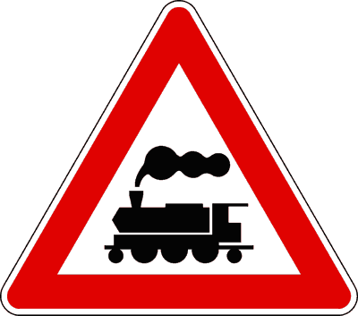
معبر سكة حديد بدون حواجز
Passaggio a livello senza barriere (Figura 9)مثلث بإطار أحمر ورسم قاطرة قطار بخاري باللون الأسود. ينبه لاقتراب تقاطع سطحي مع سكة حديد غير محمي بأي حواجز إطلاقاً.
- • يشير لمعبر سكة حديد بدون حواجز (Senza barriere né semibarriere).
- • تتبعه لوحات المسافات الثلاث (150m, 100m, 50m).
- • يليه مباشرة عند السكة صليب سان أندريا (Croce di S. Andrea Fig. 10 أو 11).
- • يزود بضوءين أحمرين متناوبي الوميض وجرس إنذار صوتي يعملان عند اقتراب القطار.
- • يشير لخط ترام في المدينة (خطأ، الترام له إشارة خاصة Fig. 14).
- • يزود بضوء أحمر ثابت واحد (خطأ، ضوءان أحمران وامضان).
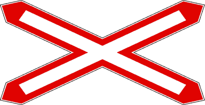
صليب سان أندريا (خط سكة حديد مفرد)
Croce di S. Andrea - Un solo binario (Figura 10)صليب أبيض بإطار أحمر على شكل حرف X. يوضع مباشرة في النقطة الفاصلة قبل خط السكة الحديد غير المحمي بحواجز، ويشير إلى وجود مسار قضبان مفرد (Un solo binario).
- • يوضع في المعابر بدون حواجز مباشرة قبل شريط القضبان (Nelle immediate vicinanze).
- • يشير إلى وجود خط سكة حديد واحد فقط (Un solo binario).
- • يمكن تثبيته أفقياً أو رأسياً.
- • يلزم السائق بالتأكد التام من خلو القضبان من كلا الاتجاهين قبل العبور.
- • يوضع على بعد 150 متراً قبل السكة (خطأ جسيم، يوضع مباشرة عند السكة).
- • يشير إلى وجود خطين أو أكثر (خطأ، خط مفرد فقط).
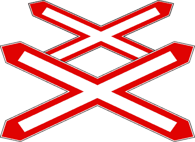
صليب سان أندريا المزدوج (خطان أو أكثر)
Doppia Croce di S. Andrea - Due o più binari (Figura 11)صليبان متعاقبان على شكل حرف X باللون الأبيض والإطار الأحمر. يوضع مباشرة قبل شريط السكة الحديد بدون حواجز، ويشير لوجود خطين أو أكثر من القضبان.
- • يوضع مباشرة قبل معبر السكة الحديد بدون حواجز.
- • يشير إلى وجود أكثر من خط سكة حديد (Due o più binari).
- • يحذر من خطورة مرور قطار ثانٍ قادم في الاتجاه المعاكس بعد مرور القطار الأول.
- • يوضع في المعابر المجهزة بحواجز كاملة (خطأ، يوضع فقط بدون حواجز).
لوحات المسافات لمعابر السكة الحديد والجسور
Pannelli distanziometrici (Figura 13)ثلاث لوحات مستطيلة بيضاء بأشرطة حمراء مائلة (3 خطوط، خطان، خط واحد). تستخدم لإشعار السائق بالاقتراب المتدرج من معبر السكة الحديد أو الجسر المتحرك.
- • توضع اللوحة ذات 3 خطوط على بعد 150 متراً تقريباً تحت إشارة الخطر.
- • توضع اللوحة ذات الخطين على بعد 100 متر (ثلثي المسافة).
- • توضع اللوحة ذات الخط الواحد على بعد 50 متراً (ثلث المسافة الأخير).
- • تسبق جميع أنواع معابر السكة الحديد (بحواجز، بنصف حواجز، وبدون حواجز) والجسر المتحرك.
- • تسبق فقط المعابر المجهزة بحواجز (خطأ، تسبق كافة أنواع المعابر).
- • توضع على بعد 300 و 200 و 100 متر (خطأ، المسافات الرسمية 150 و 100 و 50 متراً).
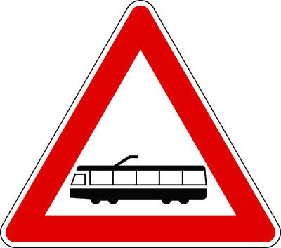
تقاطع مع خط ترام غير محمي بحواجز
Attraversamento tranviario (Figura 14)مثلث بإطار أحمر ورسم عربة ترام. ينبه لاقتراب تقاطع مسار الترام مع حركة سير المركبات سواء داخل المدينة أو خارجها، وله الأولوية.
- • ينبه لوجود خط ترام يتقاطع مع مسار السيارات أو يسير بمحاذاتها.
- • يذكر بأن الترام له حق الأسبقية ما لم توجد إشارات مرور ضوئية تنظم العبور.
- • ينبه لتقليل السرعة بسبب انزلاق الإطارات على قضبان الترام الحديدية (Rotaie).
- • يسمح بتجاوز الترام المتوقف من اليمين فقط إذا كان هناك رصيف حماية للركاب (Salvagente).
- • يشير إلى محطة ترام وموقف حافلات فقط (خطأ، يشير لتقاطع مسار السير مع قضبان الترام).
- • يلزم السائق بالتوقف الإجباري دائماً (خطأ، تخفيض السرعة وإعطاء الأسبقية للترام).
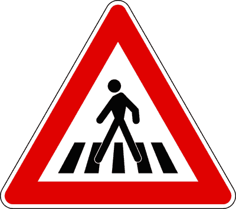
اقتراب ممر مشاة (Attraversamento pedonale)
Attraversamento pedonale (Figura 15)مثلث بإطار أحمر ورجل يعبر خطوط المشاة. يوضع قبل ممر المشاة بمسافة 150 متراً كإشعار مسبق بالخطر لتهدئة السرعة وإعطاء المشاة حق العبور.
- • ينبه بوجود ممر مشاة مخطط على بعد 150 متراً تقريباً.
- • يلزم بإعطاء الأسبقية التامة للمشاة العابرين أو الذين يوشكون على العبور.
- • يمنع التجاوز للمركبات التي تبطئ أو تتوقف لإفساح المجال للمشاة.
- • يوضع في مكان الممر مباشرة (خطأ، عند الممر مباشرة توضع اللوحة الزرقاء المربعة Fig. 130).
- • يشير إلى مسار حصري للمشاة (خطأ، هذا إشارة إلزام دائرية زرقاء Fig. 108).
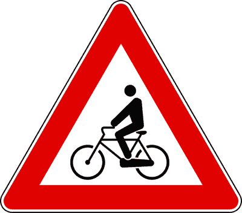
اقتراب ممر عبور الدراجات الهوائية
Attraversamento ciclabile (Figura 16)مثلث بإطار أحمر ورسم دراجة هوائية تسير فوق خطوط متقطعة. ينبه لوجود ممر مخطط ومخصص لعبور الدراجات الهوائية عرضياً عبر نهر الطريق.
- • ينبه لاقتراب معبر مخصص للدراجات الهوائية على بعد 150 متراً.
- • يلزم السائق بتهدئة السرعة وإعطاء الأسبقية لراكبي الدراجات الذين يعبرون الممر.
- • يحظر التجاوز بالقرب من المعبر إذا توقفت مركبة للسماح بعبور الدراجات.
- • يشير إلى مسار دراجات إجباري (خطأ، الإجباري دائري أزرق Fig. 110).
- • يمنع مرور الدراجات الهوائية (خطأ، المنع دائري أحمر Fig. 63).
منحدر حاد وخطير (Discesa pericolosa 10%)
Discesa pericolosa con pendenza (Figura 17)مثلث بإطار أحمر ورقم نسبة مئوية ينحدر لأسفل. ينبه لوجود هبوط شديد الانحدار يزيد من سرعة المركبة بفعل الجاذبية ويزيد مسافة الفرملة.
- • ينبه لوجود منحدر حاد (هبوط بنسبة 10 أمتار لكل 100 متر طول).
- • يلزم بتعشيق غيار سرعة منخفض (Marcia bassa) للاستفادة من فرامل المحرك (Freno motore).
- • يمنع السير بوضع التحييد (In folle) أو مع الضغط على القابض (Frizione).
- • يحذر من زيادة مسافة التوقف وسخونة واحتراق أقمشة الفرامل (Surriscaldamento dei freni).
- • ينصح بإطفاء المحرك لتوفير الوقود (خطأ قاتل يوقف نظام التوجيه ومؤازر الفرامل).
- • يشير إلى صعود حاد (خطأ، الصعود الحاد يرتفع من اليسار لليمين Fig. 18).
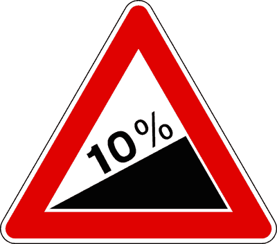
صعود حاد وشديد الارتفاع (Salita ripida 10%)
Salita ripida con pendenza (Figura 18)مثلث بإطار أحمر برسم يرتفع من اليسار إلى اليمين بنسبة مئوية (مثلاً 10%). ينبه لصعود حاد يتطلب عزم دوران مرتفع وتخفيض الغيار لتفادي توقف المحرك.
- • ينبه لصعود حاد وشديد الارتفاع يقلل من تسارع المركبة.
- • يلزم باختيار غيار سرعة مناسب لتوفير القوة الكافية للمحرك.
- • يتطلب الانتباه للمركبات البطيئة والثقيلة في الأمام.
- • يشير إلى هبوط حاد (خطأ، الهبوط ينحدر لأسفل Fig. 17).
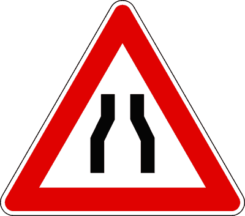
تضييق متماثل في نهر الطريق من الجانبين
Strettoia simmetrica (Figura 19)مثلث بإطار أحمر يصور ضيقاً في عرض نهر الطريق من الجانبين معاً (اليمين واليسار). يحذر من صعوبة تقابل المركبات القادمة في الاتجاه المعاكس.
- • ينبه لضيق في عرض نهر الطريق من كلا الجانبين (Da entrambi i lati).
- • يلزم بتخفيض السرعة والانتباه الشديد لصعوبة التقابل مع المركبات القادمة.
- • إذا كانت الخلفية صفراء، فالتضييق ناجم عن ورش صيانة بالطريق.
- • يمنح الأسبقية دائماً للمركبات القادمة (خطأ، الأسبقية تنظمها إشارات خاصة دائرية ومربعة Fig. 45 و 46).
- • يشير إلى تحول الطريق لاتجاه واحد (خطأ، الطريق يضيق فقط).
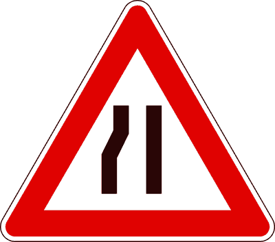
تضييق في نهر الطريق من جهة اليسار
Strettoia asimmetrica a sinistra (Figura 20)مثلث بإطار أحمر يصور استقامة الجانب الأيمن وضيق الجانب الأيسر. ينبه لانحسار عرض الطريق من الجهة اليسرى وصعوبة التقابل.
- • ينبه لضيق نهر الطريق من الجانب الأيسر فقط (Sul lato sinistro).
- • يلزم بتخفيض السرعة والحرص عند التقابل مع المركبات القادمة بالاتجاه المعاكس.
- • يشير لتضييق من الجانب الأيمن (خطأ، الجانب الأيمن مستقيم والأيسر هو الذي يضيق).
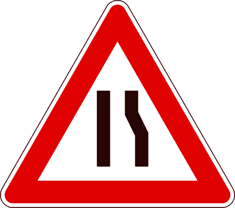
تضييق في نهر الطريق من جهة اليمين
Strettoia asimmetrica a destra (Figura 21)مثلث بإطار أحمر يصور استقامة الجانب الأيسر وضيق الجانب الأيمن. يحذر السائق من ضيق مساره الأيمن وضرورة الاندماج بحذر.
- • ينبه لتضييق الطريق من جهة اليمين (Sul lato destro).
- • يتطلب الانتباه لحركة السير المجاورة وإمكانية التوقف إذا دعت الحاجة.
- • يمنح الأسبقية لمن يسير في اليمين (خطأ، من يضيق مساره عليه الحذر وإفساح الطريق للمسار المستمر).
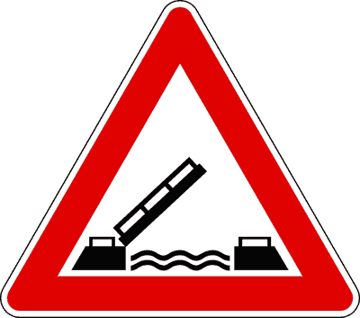
جسر متحرك (Ponte mobile)
Ponte mobile (Figura 22)مثلث بإطار أحمر برسم جسر يرتفع فوق مجرى مائي. ينبه لاقتراب جسر متحرك يفتح دورياً لمرور السفن والقوارب المائية.
- • ينبه لوجود جسر متحرك يفتح للملاحة المائية.
- • تلحقه لوحات المسافات الثلاث (Pannelli distanziometrici: 150m, 100m, 50m).
- • يزود بضوءين أحمرين متناوبي الوميض يفرضان التوقف عند تشغيلهما.
- • يشير إلى رصيف ميناء ينتهي بماء (خطأ، هذا Sbocco su molo Fig. 30).
- • يسمح بالمرور أثناء تشغيل الأضواء الحمراء بحذر (خطأ، التوقف إجباري تام).
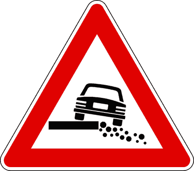
حافة طريق غير مستقرة ومهددة بالانهيار
Banchina cedevole o pericolosa (Figura 23)مثلث بإطار أحمر ورسم سيارة تميل عجلتها اليمنى فوق حافة منهارة لخندق جانبي. ينبه لخطورة الاقتراب من حافة الطريق الترابية الهشة لتفادي الانقلاب.
- • ينبه لوجود حافة طريق ترابية ضعيفة وغير ثابتة (Banchina cedevole).
- • يحذر من خطر السقوط والانقلاب في الخندق الجانبي (Rischio di caduta nella cunetta).
- • يلزم السائق بتجنب الاقتراب المفرط من الحافة اليمنى للطريق.
- • ينبه لخطر السقوط في البحر أو النهر (خطأ، هذا Sbocco su molo).
- • يمنع السير على الطريق بالكامل (خطأ، يحذر من الحافة فقط).
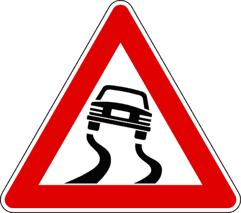
طريق زلق (Strada sdrucciolevole)
Strada sdrucciolevole (Figura 24)مثلث بإطار أحمر ورسم سيارة تنحرف وتنزلق مخلفة مسارات متعرجة. ينبه لانخفاض حاد في تماسك الإطارات مع الإسفلت في ظروف مناخية معينة.
- • ينبه لمقطع طريق يقل فيه تماسك الإطارات ويصبح زلقاً في ظروف محددة.
- • يقترن عادة بلوحة تكميلية توضح سبب الانزلاق: مطر (Pioggia) أو ثلج وجليد (Ghiaccio).
- • يلزم بزيادة مسافة الأمان، وتجنب الفرملة العنيفة والمناورات المفاجئة بالمقود.
- • يشير إلى وجود حصى وركام متطاير (خطأ، الحصى له لوحة خاصة Fig. 31).
- • يلزم بتركيب سلاسل الثلوج دائماً (خطأ، السلاسل لها إشارة إلزام دائرية زرقاء Fig. 107).
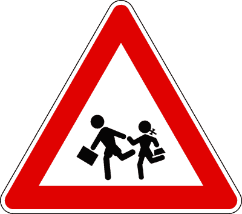
أماكن يرتادها الأطفال (مدارس وملاعب)
Bambini (Figura 25)مثلث بإطار أحمر ورسم طفلين يركضان بحقيبة مدرسية. ينبه لاقتراب أماكن يتكرر فيها وجود الأطفال وعبورهم المفاجئ مثل المدارس والحدائق والملاعب.
- • ينبه لاقتراب أماكن يتردد عليها الأطفال بكثرة (مدارس، حدائق، ملاعب أطفال).
- • يلزم السائق بالحذر الشديد وتوقع اندفاع الأطفال فجأة إلى نهر الطريق من بين السيارات الواقفة.
- • يمنع التجاوز بالقرب من حافلة مدرسية متوقفة لإنزال التلاميذ.
- • يشير إلى ممر مشاة محجوز للأطفال فقط (خطأ، لا يوجد ممر مشاة حصري للأطفال).
- • يشير إلى محطة حافلة مدرسية فقط (خطأ، يشير لمناطق تواجد الأطفال عموماً).
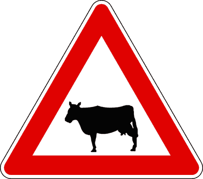
احتمال وجود أو عبور حيوانات أليفة ومواشٍ
Animali domestici vaganti (Figura 26)مثلث بإطار أحمر ورسم بقرة باللون الأسود. ينبه لاحتمال وجود حيوانات مستأنسة ومواشٍ سائبة أو تعبر الطريق في المناطق الريفية والمزارع.
- • ينبه لاحتمال مصادفة حيوانات أليفة أو قطيع مواشٍ على الطريق أو جانبه.
- • يلزم بتهدئة السرعة والتوقف بهدوء إذا أبدت الحيوانات خوفاً أو ذعراً.
- • يمنع استخدام آلة التنبيه (الكلاكس) تفادياً لذعر الحيوانات واندفاعها نحو السيارة.
- • يشير إلى حيوانات برية غابية (خطأ، البقرة تدل على حيوانات مستأنسة Domestici).
- • يلزم باستخدام الكلاكس لطرد الحيوانات (خطأ جسيم ومخالفة مرورية).
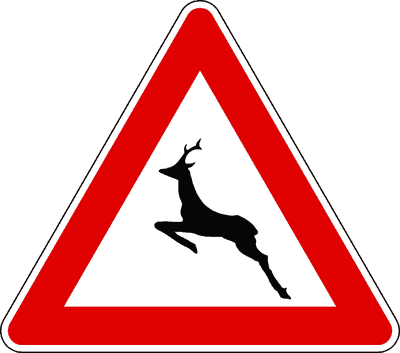
احتمال عبور حيوانات برية وغابية طليقة
Animali selvatici vaganti (Figura 27)مثلث بإطار أحمر ورسم غزال أو أيل يقفز. ينبه لاحتمال عبور مفاجئ لحيوانات برية في المناطق الجبلية والغابات والمحميات الطبيعية.
- • ينبه لاحتمال عبور مفاجئ وسريع لحيوانات برية طليقة (غزلان، خنازير برية).
- • يوضع في المناطق الحرجية والغابات وطرق الجبال.
- • يلزم بضبط السرعة والانتباه الشديد خاصة أثناء الليل وساعات الفجر.
- • يشير إلى محمية حيوانات صيد مغلقة (خطأ، يحذر من حيوانات طليقة تعبر الطريق العام).
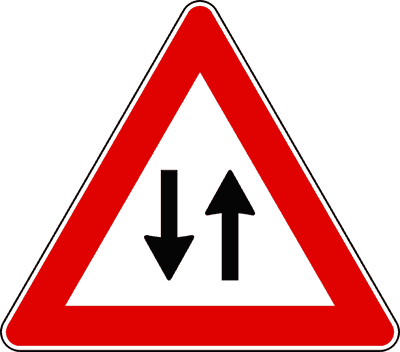
انتهاء الاتجاه الواحد وبداية حركة سير في الاتجاهين
Doppio senso di circolazione (Figura 28)مثلث بإطار أحمر وسهمان متوازيان متعاكسان في الاتجاه (أحدهما لأعلى والآخر لأسفل). ينبه لانتهاء طريق ذي اتجاه واحد وبداية حركة سير في الاتجاهين المتقابلين.
- • ينبه لانتهاء طريق ذي اتجاه واحد (Fine del senso unico).
- • يعلن أن حركة السير ستصبح في كلا الاتجاهين المتقابلين (Nei due sensi).
- • يلزم بالالتزام بأقصى الجانب الأيمن وتوخي الحذر من المركبات القادمة في الاتجاه المعاكس.
- • يمنح الأسبقية على المركبات القادمة (خطأ، لا يمنح أي أسبقية).
- • يشير لبداية طريق باتجاه واحد (خطأ، ينبه لنهاية الاتجاه الواحد).
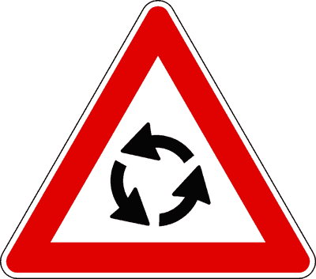
إشعار مسبق بحركة سير دائرية (دوار قادم)
Preavviso di circolazione rotatoria (Figura 29)مثلث بإطار أحمر ورسم 3 أسهم تدور عكس عقارب الساعة. يوضع كقاعدة عامة خارج المدن على بعد 150 متراً قبل الدوار لإشعار السائق بالاقتراب من مفترق دائري.
- • ينبه لاقتراب تقاطع ينظم بحركة سير دائرية (Rotatoria) على بعد 150 متراً.
- • يوضع كقاعدة عامة على الطرق خارج المدن (Strade extraurbane).
- • تليه عند مدخل الدوار الإشارة الدائرية الزرقاء (Fig. 104 Circolazione rotatoria).
- • يوضع عند الدوار مباشرة (خطأ، عند الدوار توضع الدائرة الزرقاء Fig. 104).
- • يمنح السائق حق الأسبقية داخل الدوار دائماً (خطأ، قواعد الأسبقية تحددها إشارات الدوار).
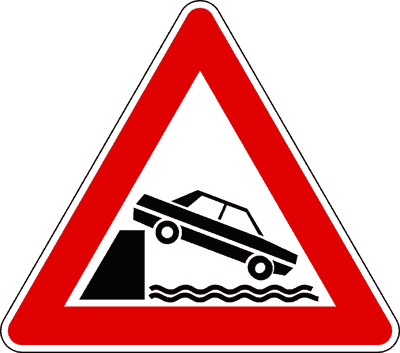
مخرج على رصيف ميناء أو ضفة نهر
Sbocco su molo o su argine (Figura 30)مثلث بإطار أحمر ورسم سيارة تسقط في مياه عميقة من رصيف مرتفع. ينبه إلى أن الطريق ينتهي برصيف ميناء أو ضفة نهر أو بحيرة دون حواجز حماية.
- • ينبه لخطر السقوط في الماء عند انتهاء الطريق (Caduta in acqua).
- • يزداد الخطر ليلاً وفي حالات الضباب وعند إجراء مناورة الرجوع للخلف (Retromarcia).
- • يوضع في الموانئ وأرصفة السفن وضفاف الأنهار والقنوات المائية.
- • يشير إلى جسر متحرك (خطأ، الجسر المتحرك Fig. 22).
- • يشير إلى طريق به مطبات مائية (خطأ).
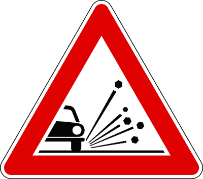
حصى وركام غير متماسك على الطريق (Pietrisco)
Materiale instabile sulla strada (Figura 31)مثلث بإطار أحمر ورسم سيارة يتطاير الحصى من تحت عجلاتها. ينبه لوجود حصى أو ركام على الإسفلت قد يقلل التماسك أو يتطاير ويصيب الآخرين.
- • ينبه لوجود حصى أو ركام سائب يقلل من تماسك الإطارات على الطريق.
- • يحذر من خطر تطاير الحصى وقذفه نحو المشاة أو الزجاج الأمامي للمركبات التالية.
- • يلزم بتخفيض السرعة وزيادة مسافة الأمان بشكل ملحوظ.
- • يشير إلى تساقط صخور من الجبال (خطأ، تساقط الصخور Fig. 32 و 33).
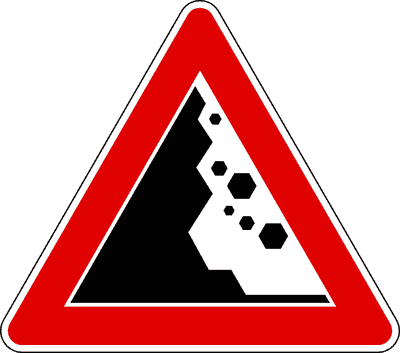
خطر تساقط صخور من جهة اليسار
Caduta massi da sinistra (Figura 32)مثلث بإطار أحمر وصخور تتساقط من سفح جبل يقع في الجانب الأيسر. ينبه لاحتمال سقوط صخور أو وجودها مستقرة فوق نهر الطريق فجأة.
- • ينبه لخطر تساقط الصخور من المنحدر الجبلي الواقع جهة اليسار.
- • يحذر من احتمال وجود صخور وأحجار ملقاة بالفعل على نهر الطريق كعائق مفاجئ.
- • يلزم بتخفيض السرعة والانتباه الشديد وتجنب التوقف الطويل في المقطع.
- • يشير لتساقط الصخور من جهة اليمين (خطأ، الجبل في اليسار).
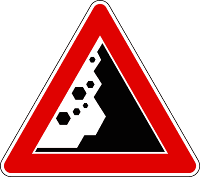
خطر تساقط صخور من جهة اليمين
Caduta massi da destra (Figura 33)مثلث بإطار أحمر وصخور تتساقط من سفح جبل يقع في الجانب الأيمن للطريق. يحذر من مفاجآت الصخور الساقطة أو المتراكمة.
- • ينبه لخطر تساقط صخور من المنحدر الجبلي الأيمن.
- • يلزم السائق بالانتباه لوجود أي عائق حجري على الإسفلت.
- • يشير لحصى سائب على الطريق (خطأ، هذا صخور جبلية تتساقط).
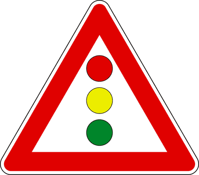
إشعار مسبق بإشارة ضوئية رأسية
Semaforo verticale (Figura 34)مثلث بإطار أحمر وداخله رسم إشارة مرور ضوئية رأسية (أحمر، أصفر، أخضر). ينبه لاقتراب تقاطع ينظم بإشارة ضوئية على بعد 150 متراً خارج المدن.
- • ينبه لوجود إشارة ضوئية رأسية قادمة على بعد 150 متراً تقريباً.
- • إلزامي وضعه على الطرق خارج المدن (Obbligatorio sulle strade extraurbane).
- • قد يحتوي القرص الأصفر على ضوء أصفر وامض في المنتصف.
- • إلزامي وضعه دائماً داخل المدن (خطأ، بالمدن اختياري ويوضع فقط عند ضعف الرؤية).
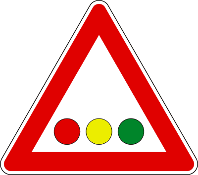
إشعار مسبق بإشارة ضوئية أفقية
Semaforo orizzontale (Figura 35)مثلث بإطار أحمر وإشارة مرور ضوئية مرتبة أفقياً (الأحمر في أقصى اليسار ثم الأصفر ثم الأخضر). ينبه لإشارة ضوئية معلقة أو موضوعة أفقياً.
- • ينبه لوجود إشارة ضوئية بأضواء مرتبة أفقياً.
- • يوضع في الأنفاق أو تحت الجسور أو في المسارات ذات الارتفاع المحدود.
- • الضوء الأحمر يكون دائماً في أقصى اليسار.
- • الضوء الأحمر يكون في أقصى اليمين (خطأ، الأحمر باليسار دائماً).
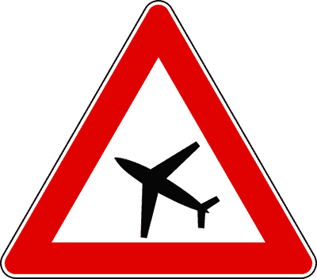
طائرات تحلق على ارتفاع منخفض (Aeromobili)
Aeromobili a bassa quota (Figura 36)مثلث بإطار أحمر ورسم طائرة نفاثة. يوضع بالقرب من المطارات ومهابط الطائرات ليحذر من دوي الأصوات المفاجئة والإبهار الضوئي.
- • يوضع بالقرب من المطارات ومسارات هبوط وإقلاع الطائرات.
- • يحذر من هدير الصوت القوي المفاجئ الذي قد يربك السائق.
- • يحذر من الإبهار الضوئي المحتمل ليلاً بفعل كشافات الطائرات المنخفضة.
- • يشير إلى مدخل المطار للمسافرين (خطأ، هذا إشارة إرشاد مربعة زرقاء).
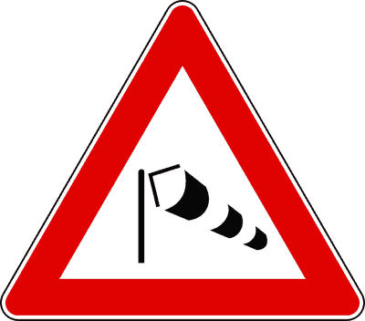
رياح جانبية قوية وعواصف مفاجئة
Forte vento laterale (Figura 37)مثلث بإطار أحمر ورسم كم الرياح (Manica a vento). يوضع على الجسور العالية والفيادوك ومخارج الأنفاق حيث تهب رياح جانبية عاتية تفقد التوازن.
- • ينبه لهبوب رياح جانبية مفاجئة وشديدة القوة (Raffiche di vento).
- • يوضع على الجسور المرتفعة والجسور المعلقة (Viadotti) وعند الخروج من الأنفاق.
- • خطره يتضاعف على: المركبات الفارغة ذات الهياكل المرتفعة (الشاحنات، الكرفان)، والمركبات التي تسحب مقطورات، والدراجات النارية.
- • يلزم بإحكام السيطرة على المقود وتخفيض السرعة.
- • يشير إلى محطة أرصاد جوية (خطأ).
- • خطره متساوٍ على كافة المركبات (خطأ، الشاحنات الخالية والكرفان والدراجات أكثر عرضة للانقلاب).
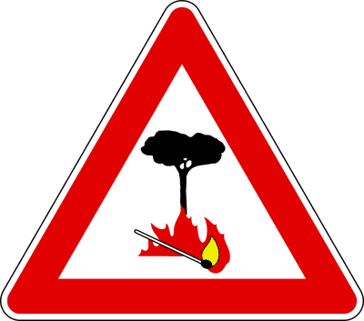
خطر نشوب حرائق في الغابات والأحراش
Pericolo di incendio (Figura 38)مثلث بإطار أحمر ورسم ألسنة لهب مشتعلة على جانب شجرة. ينبه للمرور بمحاذاة غابات وأحراش سهلة الاشتعال، ويمنع كل تصرف قد يشعل حريقاً.
- • ينبه لخطورة نشوب حرائق في الغابات والمحميات المجاورة للطريق.
- • يحظر تماماً إلقاء أعقاب السجائر المشتعلة أو الكبريت من نافذة السيارة.
- • يمنع ركن السيارة فوق الأعشاب الجافة لأن حرارة شكمان العادم (Marmitta catalitica) قد تشعل حريقاً.
- • يشير إلى محطة إطفاء حريق قريبة (خطأ).
- • يمنع مرور المركبات التي تنقل الوقود (خطأ، للمواد القابلة للاشتعال إشارة Fig. 73).
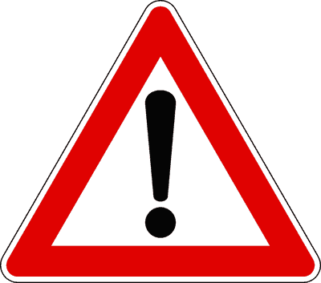
أخطار أخرى غير محددة (خطر عام)
Altri pericoli o pericolo generico (Figura 39)مثلث بإطار أحمر وبداخله علامة تعجب سوداء عريضة (!). ينبه لوجود خطر على الطريق يختلف عن الأخطار المقننة برموز خاصة، ويقترن دائماً بلوحة تكميلية توضح نوع الخطر.
- • ينبه لوجود أخطار أخرى غير مصنفة برمز محدد في قانون السير.
- • يجب أن يقترن بلوحة تكميلية (Pannello integrativo) تحدد نوع الخطر بدقة.
- • من أمثلة اللوحات الملحقة به: تساقط ثلوج وجليد، خروج آلات أشغال، أو حادث مروري.
- • يوضع بمفرده دائماً دون أي لوحة ملحقة (خطأ، يلزم اقترانه بلوحة توضيحية).
- • يفرض التوقف الفوري (خطأ، إشارة تحذير من خطر تتطلب التهدئة والحذر).
الفخ الوزاري: إذا كان الطريق باتجاه واحد (Senso unico) أو يحتوي على مسارين على الأقل لنفس اتجاه السير، فإن التجاوز مسموح به تماماً لعدم وجود خطر اصطدام بمركبات قادمة في الاتجاه المعاكس!
الفخ الوزاري: المنخفض (Cunetta) يتميز برؤية واضحة وممتازة لأن السائق يرى الطريق صاعداً أمامه؛ انعدام الرؤية خاص بالمرتفع (Dosso) فقط!
الفخ الوزاري: رسم السياج (Cancello) يعني معبراً بحواجز (Con barriere). المعبر بدون حواجز يُرمز له بقاطرة قطار بخاري (Fig. 9).
الفخ الوزاري: صليب سان أندريا هو استثناء صريح لقاعدة الـ 150 متراً، ويوضع مباشرة بجوار شريط القضبان (Nelle immediate vicinanze).
الفخ الوزاري: لوحات المسافات الثلاث تسبق كافة أنواع معابر السكة الحديد دون استثناء، وكذلك الجسور المتحركة.
الفخ الوزاري: التجاوز من اليمين جائز في حالة وحيدة: وجود رصيف Salvagente يحمي الركاب أثناء الصعود والنزول.
الفخ الوزاري: السير في وضع التحييد يُلغي فرامل المحرك، ويزيد السرعة بفعل الجاذبية، ويؤدي لاحتراق الفرامل ووقوع حوادث قاتلة.
الفخ الوزاري: الجسور المتحركة تزود بنفس نظام الأضواء الحمراء الوماضة المعتمد في معابر نصف الحواجز.
الفخ الوزاري: الإشارة تحذر من أماكن ارتياد الأطفال عموماً (مدارس وملاعب)، وليست محطة مخصصة لحافلات المدرسة.
الفخ الوزاري: استخدام الكلاكس محظور تماماً لأنه يثير ذعر الحيوانات ويدفعها للاصطدام بالسيارة بجنون.
الفخ الوزاري: الإشارة تنبه لانتهاء الاتجاه الواحد وتحول الطريق لحركة سير في كلا الاتجاهين المتقابلين (Doppio senso).
الفخ الوزاري: المقطورات والكرفان والشاحنات العالية الفارغة هي الأكثر عرضة للانقلاب والانحراف بفعل العواصف الجانبية.